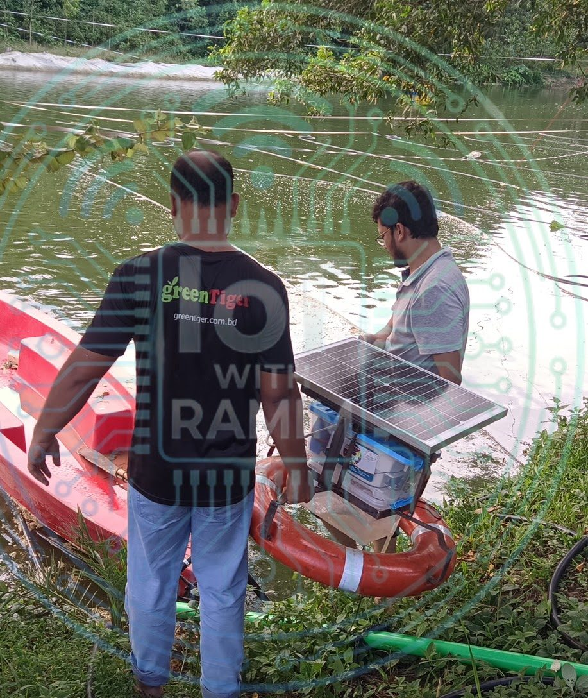
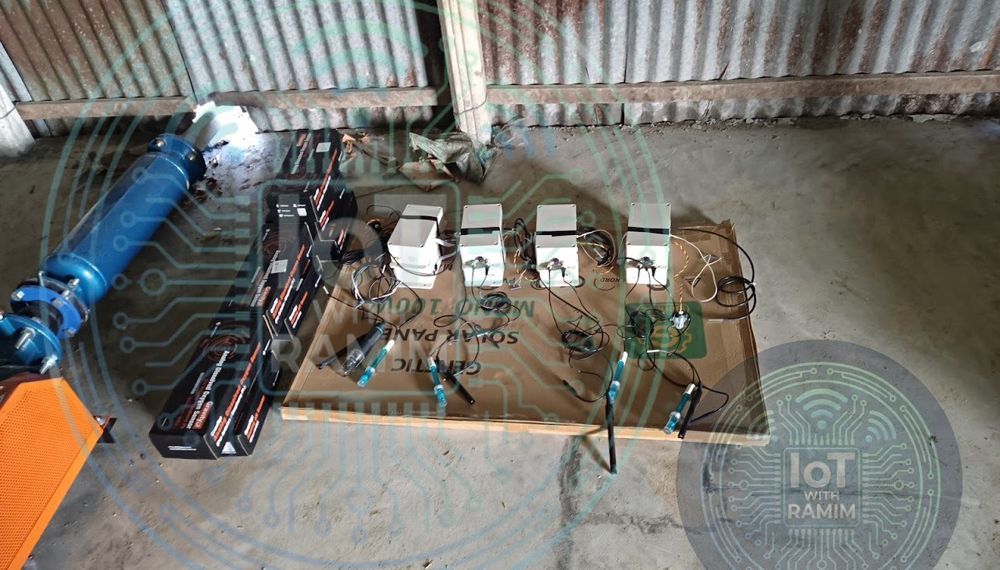

Aquaculture
Smart Aquaculture Ecosystem
An end-to-end industrial IoT solution for precision fish farming, built for Nexus Fish Network (NFN). Three ESP32-based device families, for sensing, switching and laser predator deterrence, share one MQTT API to keep water quality optimal, cut operating costs and protect the stock.
- Client
- Nexus Fish Network (NFN)
- Role
- Lead R&D Engineer (IoT & Hardware)
- Type
- End-to-end industrial IoT ecosystem
- Status
- Deployed & operational
- ESP32
- MQTT
- Wi-Fi
- LoRaWAN-ready
- Modbus RS-485
- LiFePO4 solar
- MPPT
- OTA updates
- DHT22
Overview
The Smart Aquaculture Ecosystem is a complete IoT solution for modernising traditional fish farming. It connects the biology of the pond to digital automation, keeping water quality optimal, reducing operating costs and protecting aquatic stock.
The ecosystem is built on a unified MQTT API architecture. Three device categories communicate with the cloud through it: Sensing (SEN), Switching (SW) and Laser Repellent (LR). Together they cover everything from real-time analytics to automated aeration and predator control.
System architecture
At the core is a scalable identification protocol that gives every device a unique ID derived from its MAC address. All devices run on ESP32 microcontrollers and talk over a custom MQTT structure for low latency and high reliability.
- Connectivity: MQTT over Wi-Fi, with provision for LoRaWAN gateways.
- Power: autonomous 12 V solar system with LiFePO4 batteries and MPPT charge controllers.
- Fleet management: over-the-air (OTA) firmware updates and dynamic configuration through the API.


Hardware evolution and device suite
NFN-SEN: sensor nodes
The eyes of the pond. The sensing unit monitors the critical water parameters: dissolved oxygen (DO), pH, ORP, turbidity, TDS, temperature and water level.
- Version 1.0, the flow-through concept: hobby-grade analog sensors (DFRobot Gravity series) have a short life when left submerged. An innovative "sampling box" solved this: a 12 V pump periodically drew pond water into a test chamber, protecting the sensors from continuous submersion and bio-fouling.
- Version 2.0, the industrial upgrade: moved DO and pH to industrial RS-485 Modbus sensors, and ORP to a custom interface built from a reverse-engineered analyzer module. The probes can now be submerged directly, removing the pump and greatly improving durability and data precision.
NFN-SW: switching units
The hands of the farm. An 8-channel intelligent control unit that automates heavy AC loads. It replaces manual switching of aerators and auto-feeders, acting on real-time data from the SEN nodes.
- Key feature: cloud logic triggers oxygenation only when DO levels drop, optimising energy use.
NFN-LR: laser repellent
The shield of the farm. An automated predator deterrent that uses computer-controlled lasers to drive off predatory birds without harming the ecosystem.
- Key feature: a dual-axis (X/Y) pan-tilt mechanism aims a high-power 520 nm green laser. Version 1 uses two servo motors; version 2 uses stepper motors.
Shared engineering features
All three device families (SEN, SW and LR) follow the same engineering standards for field reliability:
- Internal health monitoring: a DHT22 sensor inside every PCB enclosure reports internal temperature and humidity, so overheating or moisture ingress from a failed seal can be diagnosed remotely.
- Robust enclosures: IP65-rated waterproof boxes and "ring buoy" floating structures that stay stable in turbulent water.
- Fail-safe power: dual-power capability, accepting both solar (DC) and grid (AC-to-DC) inputs.